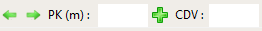
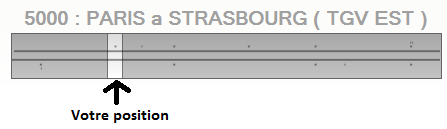
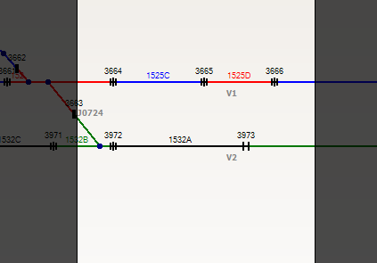

Déplacement dans une ligne
Pour vous déplacer dans une ligne, plusieurs solutions s'offrent à vous :
Barre d'outils
Utilisez les boutons présents dans la barre d'outils :

Raccourcis Clavier
Utilisez les touches 'Gauche', 'Droite', '+' et '-' de votre clavier
Barre de défilement
La ligne est entierement affichée dans la barre de défilement situé en bas à droite de l'écran.
Pour vous placer à un endroit de celle-ci, cliquez simplement sur cette barre.

Souris
Vous pouvez vous déplacez en cliquant sur le graphique et en faisant glisser votre souris.
L'utilisation de la molette vous permet de zoomer/dézoomer.
Vous pouvez zoomer de la manière suivante :
- Appuyez sur la touche 'Maj' (maintenez la pendant toute l'opération)
- Cliquez sur le graphique
- Faites glissez la souris, tout en maintenant le bouton
- Relachez la souris
L'application effectuera alors un zoom sur la zone séléctionnée :
